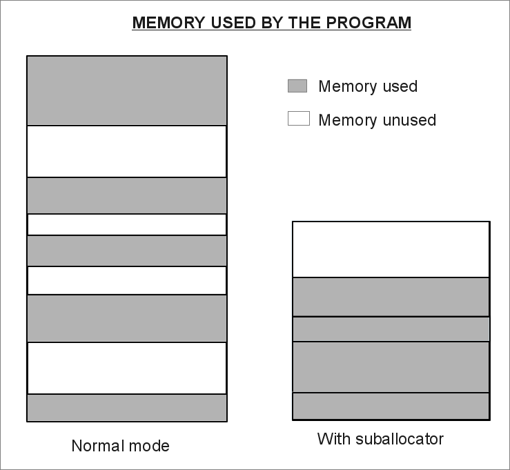
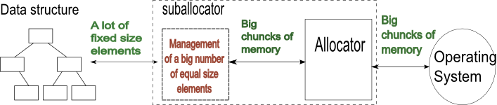
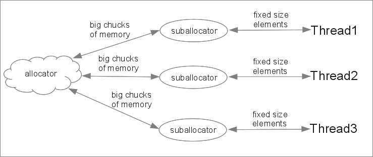
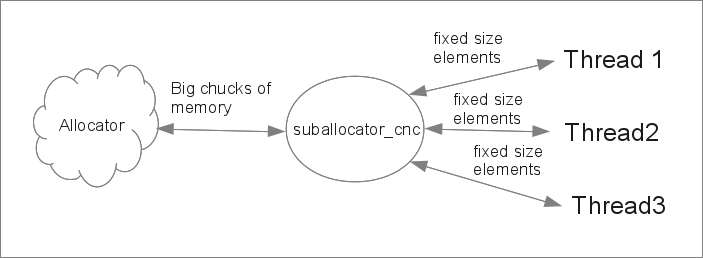
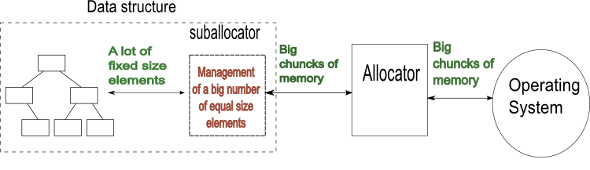

The [ Counter Tree + Suballocator ] Library
Francisco Jose Tapia Copyright ©
2010-2013 Francisco Jose Tapia
1.2.-
Description of the Suballocators
Many STL data structures need to allocate and deallocate a big number
of elements of fixed size. The allocator is the data structure defined
in the STL, as interface between the data structures and the memory
provided by the Operating System (O.S.). The allocator manages the
memory received from the Operating System, and the memory requested in
the allocate operations and the memory returned in the deallocate
operations.
The allocators have 4 problems :
- The speed of the
allocation and deallocation
- The memory consumption.
Many allocators, when allocate one elements, allocate too,
additional information for the deallocating. This increase the size
of the memory used, and we can find that the same set of elements
need a 50% more memory in GCC than in Visual C++ 10.
- Many allocators don't return
well the unused chucks of memory to the Operating System
and the memory used by the allocator is the maximum used and never
decrease. If you have a small number of elements, you have a small
problem, small resources and small time operations. But, if you have
several millions of elements allocated, perhaps you are using
several GB of memory. Running a program with GB of memory don't
used, because the allocator don't return the memory request, is a
great waste of resources.
- The last problem is the cache
performance. If the elements allocated are dispersed, you
obtain a poor cache allocation, and poor performance. The difference
can be until 30% of the time This effect is named as data locality
improvement.

The
suballocator is a solution to
these problems. The suballocator is a layer between the
allocator and the data structures, compatible with any allocator with
the STL definition. The suballocator request memory to the allocator,
and return to it when unused.

With the suballocator
a)
We
have a very fast allocation (around
2 times faster than the std::allocator of GCC 4.7, CLANG 3.0 and
3 times than Visual Studio 10 *See details in the Suballocator
Benchmark)
b)
Return memory to the allocator,
for to be used by others types of data. The unused memory is
returned to the allocator ant to the Operating System decreasing the
memory used by the program,
( as you can see in the
Suballocator Benchmark )
c)
You can use with any allocator if
it is according with the STL definition. The suballocator
provides speed and memory management to any allocator . You can use
with the STL list, set, multiset, map and multimap, and with any other
data structure with fixed size elements allocation.
d) When the data structure allocate a chuck of memory,
the
suballocator don't add any other additional information ( for
to allocate 50.000.000 uint64_t elements, the GCC allocator use 1.95
Gigas of memory. The same with the suballocator need 0.92 Gigas of
memory)
e)
The improvement in the cache
performance. The time obtained by the std::set +
suballocator, compared with a std::set, in the same benchmark is
around 30% - 40% lower.
We have two classes of suballocator:
Suballocator
This class create a suballocator in each thread from where allocate the
memory for the elements of these thread only. Each thread have its own
suballocator. It is not thread safe because only is accessed by 1 thread

Suballocator_cnc
This class create a static global pool from where allocate memory for
all the threads. The code of this class is thread safe, and can be
accessed simultaneously by several threads

1.3.-
Description of Counter Trees + Suballocators
The next step is to join the two previous concepts.
The idea is to integrate the suballocator inside the data structure.
With this, you have data structures, with identical interface than the
STL structures with the same name, but with an internal pool, which
increase the speed of the data structure, and return memory to the
allocator and the Operating System when don't use.
You have the more speed than the STL data structures and more memory
control with the easy use of the STL data structures.
With this, we have, in the namespace countertree, the classes
vector_tree_pool,
set_pool, multiset_pool, map_pool and multimap_pool, which are
the data structures with the suballocator integrated, and the concurrent
version
vector_tree_pool_cnc,
set_pool_cnc, multiset_pool_cnc, map_pool_cnc and multimap_pool_cnc.

 Boost
C++ Libraries
Boost
C++ Libraries